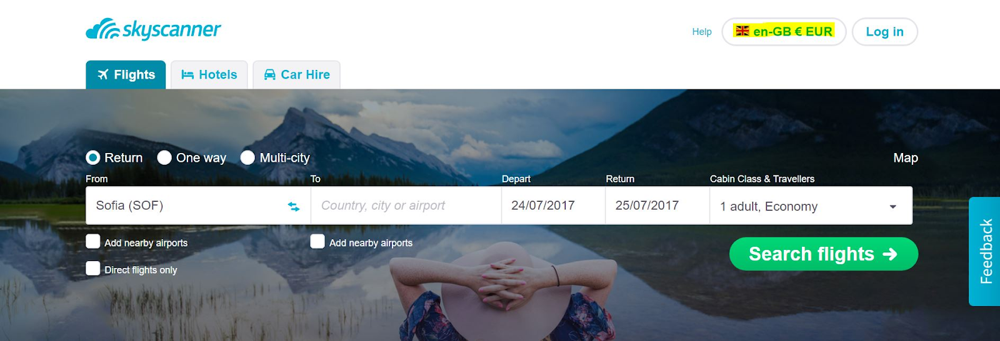
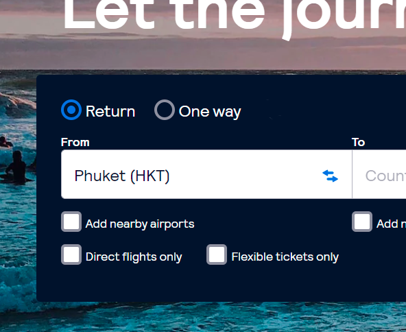
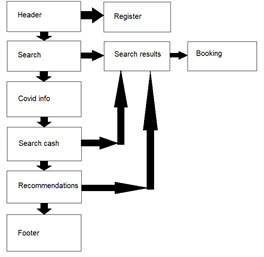
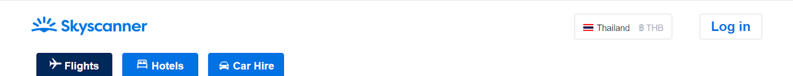
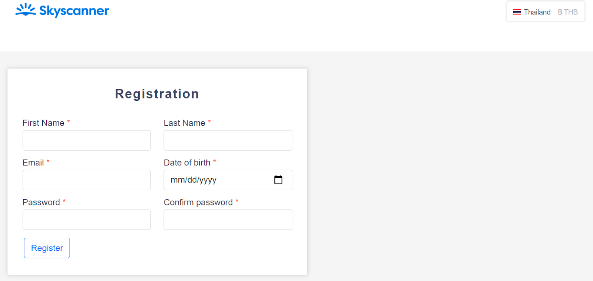
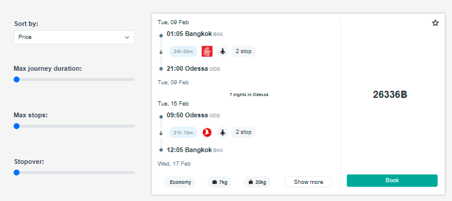
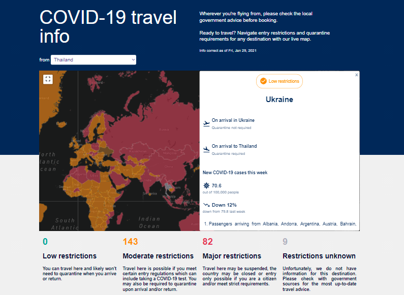
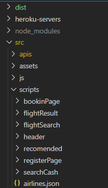
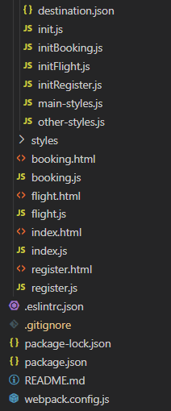
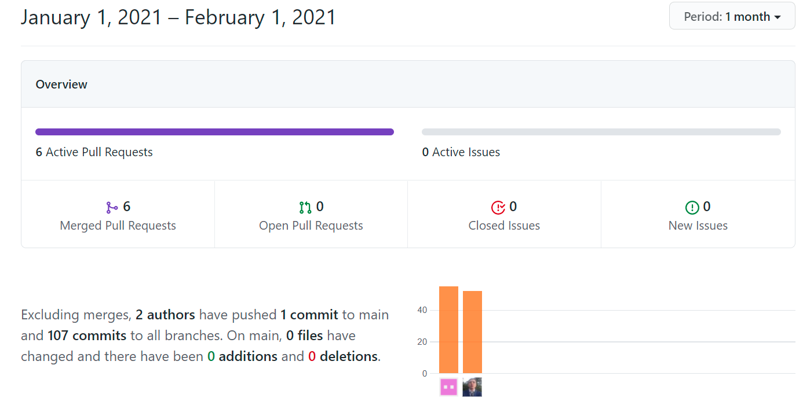

Project name: skyscanner clone
Participants:
Ivanna Hrytsiuk
Roman Gupalenko
Course: js/fe 2020 q3
RS Clone
RS Clone — is a final project of JavaScript/Front-end course The Rolling Scopes School. This is a team task, during which we need to recreate some game or application. We chose Skyscanner but focused only on flight tickets.
What is Skyscanner?
Skyscanner is a flight search engine. To be more general, they are an online travel search engine, since they also let you book a hotel and rent a car. The website is entirely free to use. There are neither hidden fees or additional expenses: the prices you see are the ones you will pay. Skyscanner searches airlines and online travel agents’ websites by displaying the cheapest flight deals in under 30 seconds.
How does it work?
Step 1: Select the currency and language
In the top-right corner, choose the currency you want prices to be displayed in among the most common ones ($, €, £) or others.
Step 2: Choose the kind of ticket you want
Select whether you’re searching for a one-way or return ticket.
Step 3: Fill in your travel details
Enter which city you want to fly from in the “From” section and your destination in “To”. Select your flight date from the calendar, the number of passengers.

Step 4: Hit search and choose among the flight results
By default, Skyscanner displays results from the cheapest trip to the most expensive airfare.
Our team consisted of two people.
Ivanka — interest programming from autumn 2019. Higher education of Chemical Technology. Before starting study at RSSchool, she attended courses at Logos It Academy in Ukraine.
Roman — began to show interest in programming from the 11th grade of school. He has a degree in software engineering. Before studying at RSSchool, he took many free courses from GeekBrains, HTMLAcademy, FreeCodeCamp, etc.
Education can be divide into stages of different tasks for different subjects. The school publishes the task, divided into points, which significantly simplifies the work on it. There are educational lectures online, where you can ask questions lecturer or later watch the video in the recording. The school regularly conducts tests to identify gaps in knowledge.
During the training, we did:
- Calculator — without using the eval() function;
- Momentum — with using localStorage and API requests;
- Virtual keyboard — work with keyboard and mouse events;
- Game puzzle — drag and drop effects and algorithm for automatically end the game;
- English for kids — with using audio;
- COVID-19 dashboard — the first team task;
- RS Clone — final task.
Before starting the project, we made a scheme of pages and blocks and how they will interact with each other:
Based on this scheme, we divided the work into parts and functionality.
Using IP Address Lookup, we identify and display the user’s location. Depending on the country, we also set the currency. The user can change this data at any time.
There is also a log in button that invites the user to log in or register in the system.
On the registration page, the user fills out the form. When the form is filled correctly, the user can apply the data and get a notification about the registration status.
Registration Page
Search Form
For tickets search, we use the Tequila API. To start the search, you need to choose a one-way ticket or return, enter the country, city, or airport IATA code, dates, and the number of passengers. When entering data in the fields FROM and TO, the user is offered input options depending on his location or the entered characters.
Tequila API
By default, tickets are sorted by price from lowest to highest. Users also can apply filters to get better results and check the details of each ticket option and choose the best one.
The user must enter an email to confirm the reservation. After confirmation, we will send an email with the information that we cannot book a ticket because we can’t ensure the protection of user data.
Also, we made a live map with the latest information about COVID-19 we think it’s importantly for people who plan to travel abroad. The user selects the country of departure, by choosing the country of interest on the map, he can read up-to-date restrictions on entry and return.
COVID-19 Map with travel information
The program remembers each user search, and if he hasn’t confirmed the ticket reservation, we offer him to return to and continue it. And also, check out popular destinations.
If you want to check whether we show up-to-date tickets and prices, we recommend using kiwi.com.
For work together, we used messages in Discord, several times we called to discuss tasks.
RACI Matrix
| Task\Author | Ivanka | Roman |
|---|---|---|
| Ticket search | RA | A |
| Authentication | RA | AC |
| Database | RA | A |
| General site view | RA | AC |
| CODIV-19 information | AI | RA |
| Heroku service | ACI | RA |
| CODIV-19 map | AI | RA |
| Webpack configuration | ACI | RA |
The difficulties we faced:
- In the beginning, we planned to use Skyscanner API for flight ticket search through the site rapidapi.com, which provides a free API-Key. But we realized that they gave access only to cached results, not live. After a long search, we decided to use the Tequila API.
- We use the Mysql database to collect data on registered users. The difficulty was connecting the Mysql database to the Heroku server because, by default, Heroku provides a PostgreSQL. Problem solved by hours of trying and googling, and for work Mysql on Heroku we used the application ClearDB.
In general, we used:
For styles:
- bootstrap — for marking and responsive;
- toastr — for notification.
For map:
- leaflet — for interactive map;
- leaflet.fullscreen — for add fullscreen button to map;
- geojson — for representing geographic data in JSON.
For registration and log in:
- bcryptjs — for password-hashing;
- body-parser — for parsing the incoming request bodies in a middleware;
- express — provides a robust set of features for applications;
- jsonwebtoken — for encoding and decoding;
- mysql — for accessing a MySQL database;
- sequelize — for maps an object syntax onto our database schemas.
APIs:
- https://corona.lmao.ninja/v2/countries — for pulling out iso3 and iso2 in countries and further comparison;
- https://www.skyscanner.co.th/g/can-i-go-map-api/map/feature-collection-translated — used to get data on travel restrictions;
- https://restcountries.eu/ — Get information about countries;
- https://skyscanner-skyscanner-flight-search-v1.p.rapidapi.com/apiservices/autosuggest/v1.0/UK/GBP/en-GB/ — Retrieve the market countries that Skyscanner support;
- https://tequila-api.kiwi.com/v2/search — for flights Search;
- https://extreme-ip-lookup.com/ used to find user location.
Else:
- remarkable — used to convert Markdown to HTML code;
- nodemailer — for easy as cake email sending.
To organize the code, we used the MVC architectural pattern( Model–View–Controller).
Our project structure:
Start of structure:
End of structure:
Here you can find our changelog file.
Activity in project:
In general, Ivanka — was responsible for ticket search, authentication, database, and general site view. Roman — was responsible for CODIV-19 information, map, Heroku service, and Webpack configuration.
Quality control was provided by checking each other’s tasks and testing.
During this project, we learned that careful planning is absolutely vital to a project’s success and also this project was a brilliant learning exercise.